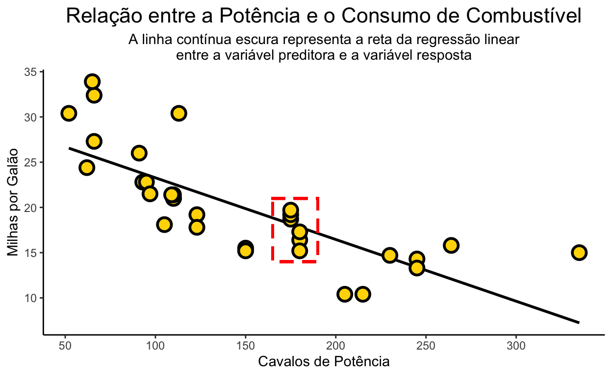
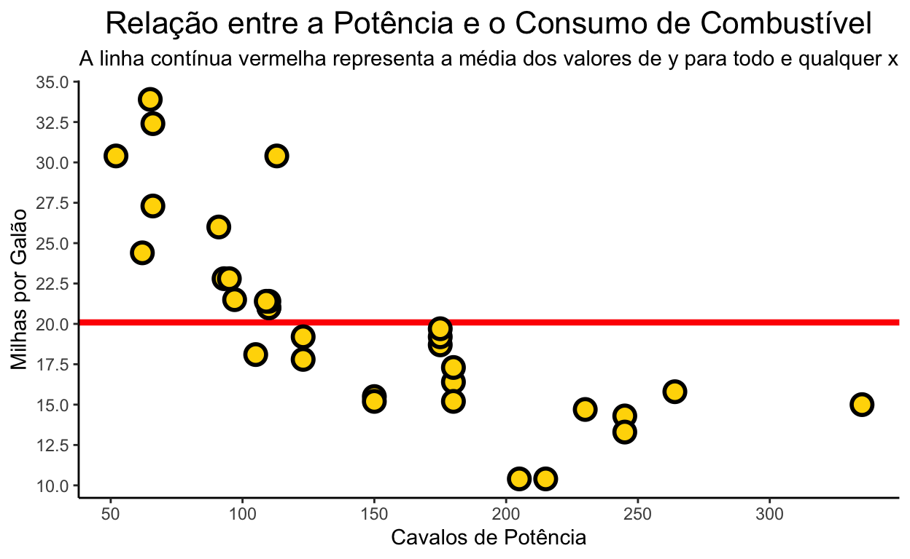

A short description of the post.
Um dos principais fundamentos ao testarmos algum tipo de intervenção sobre uma variável resposta é a possibilidade de contrastarmos o efeito deste tratamento contra um cenário controle. Em outras palavras, buscamos contrastar duas condições que são o mais similares possíveis em todos os aspectos, menos aquele de interesse. Esta é uma das bases do método científico, e um aspecto fundamental de qualquer tipo de experimento.
Como uma ciência, também é necessário termos esse tipo de pensamento em todas as etapas de um trabalho de Ciência de Dados. Isto é especialmente importante quando iniciamos a etapa de modelagem, quando deveríamos fazer perguntas como:
Neste aspecto, é extremamente importante que sejamos capaz de definir um baseline razoável para o problema de ciência de dados que buscamos resolver - isto é, é a solução mais simples que se pode dar a um problema de dados que estamos trabalhando. Exemplos de um baseline seriam algum tipo de regra de negócio, algum sumário estatístico dos dados ou, ainda, valores aleatórios. Assim como em um experimento, a ideia aqui é algum tipo de intervenção que não contenha aquilo que você quer implementar de forma à gerar uma predição.
A pergunta agora que segue é: qual baseline para os diferentes tipos de problemas de dados que normalmente encontramos? Vamos ver alguns exemplos disto nos itens a seguir.
Em um problema de classificação normalmente queremos: 1. Prever uma ou mais classes a qual pertence cada instância; e/ou,
2. Prever a probabilidade de uma instância pertencer à uma ou mais classes.
Quando estamos trabalhando com o objetivo de prever de classes, uma prática comum é definir como o baseline da nossa solução que todas as instâncias pertencem à apenas uma das classes disponíveis (normalmente, a classe mais comum). No exemplo abaixo, temos que grande parte das instâncias pertencem à classe negativa:
library(tidyverse) # core
library(tidymodels) # machine learning
library(modeltime) # series temporais
## setando a seed para gerar as instâncias
set.seed(seed = 33)
## gerando as instâncias
targets <- sample(x = c('Positivo', 'Negativo'), size = 500, prob = c(0.05, 0.95), replace = TRUE)
## passando pela elas para um fator
targets <- as.factor(targets)
## gerando a tabela
kableExtra::kable(table(targets), row.names = FALSE, col.names = c('Classe', 'Observações'), align = 'c', format = 'html')
| Classe | Observações |
|---|---|
| Negativo | 474 |
| Positivo | 26 |
Assim, se estamos utilizando a acurácia como a métrica de performance da nossa solução, e utilizamos a estratégia descrita acima para definir nosso baseline, temos como nível do nosso baseline uma acurácia de 94.8%. Isto quer dizer que qualquer algoritmo que vamos tentar ajustar a este problema deve apresentar uma performance superior a este baseline, de forma a ser considerado útil à resolução ao problema de dados. Caso contrário, temos evidência de que o algoritmo utilizado não é melhor do que uma regra de negócio qualquer, e o modelo que obtivemos não é útil para resolver o problema de dados.
# criando o nosso baseline naive
classe_naive <- rep(x = 'Negativo', times = 500)
classe_naive <- factor(x = classe_naive, levels = c('Negativo', 'Positivo'))
# calculando a acurácia no nosso baseline naive
accuracy_vec(truth = targets, estimate = classe_naive)
[1] 0.948Quando estamos prevendo probabilidades, por outro lado, uma abordagem que pode ser utilizada é definir como a proporção de instâncias na classe alvo como o nosso baseline. Utilizando novamente o nosso exemplo acima, isto corresponderia dizer que a probabilidade seria equivalente à proporção de vezes que a classe positiva ocorre no nosso conjunto de dados. Isto é:
Assim, se estamos utilizando a entropia cruzada como nossa métrica de avaliação, teríamos que como o nosso baseline o valor de 2.8055498. Consequentemente, para que qualquer modelo que desenvolvamos seja considerado útil, ele precisaria fornecer um valor menor do que este.
mn_log_loss_vec(truth = targets, estimate = probabilidade_naive)
[1] 2.80555A idéia por trás da técnica de regressão é que estamos utilizando algum tipo de modelo que possa prever o valor esperado de uma variável resposta dado os valores de uma ou mais covariáveis - conforme representado na figura abaixo. Se fizermos uma secção vertical nesta relação (representada pela caixa com as linhas tracejadas vermelhas, abaixo), temos que a previsão dada por aquele segmento de reta naquele trecho nada mais é do que o valor esperado da média de y. Na realidade, se pudéssemos dar um zoom a cada microsegmento da reta que define esta relação, teríamos ali os valores da média de y para aquele(s) valor(es) de x. Em última instância, é daí que vem o nome da técnica: regressão à média.
ggplot(data = mtcars, mapping = aes(x = hp, y = mpg)) +
geom_smooth(method = 'lm', se = FALSE, color = 'black') +
geom_point(shape = 21, size = 4, stroke = 1.5, color = 'black', fill = 'gold') +
geom_rect(mapping = aes(xmin = 165, xmax = 190, ymin = 14, ymax = 21), fill = NA, color = 'red', linetype = 2, size = 1) +
scale_x_continuous(name = 'Cavalos de Potência', n.breaks = 10) +
scale_y_continuous(name = 'Milhas por Galão', n.breaks = 10) +
ggtitle(label = 'Relação entre a Potência e o Consumo de Combustível',
subtitle = 'A linha contínua escura representa a reta da regressão linear\nentre a variável preditora e a variável resposta') +
theme_classic() +
theme(plot.title = element_text(hjust = 0.5, size = 16),
plot.subtitle = element_text(hjust = 0.5))

Desta forma, uma baseline razoável de ser utilizado para problemas de regressão é definirmos que o valor previsto de y para todo e qualquer valor de x é a média de y. Em outras palavras: \[f(y) = \bar{y}\]. Visualmente, isto seria equivalente à:
ggplot(data = mtcars, mapping = aes(x = hp, y = mpg)) +
geom_abline(slope = 0, intercept = mean(mtcars$mpg), size = 1.5, color = 'red', linetype = 1) +
geom_point(shape = 21, size = 4, stroke = 1.5, color = 'black', fill = 'gold') +
scale_x_continuous(name = 'Cavalos de Potência', n.breaks = 10) +
scale_y_continuous(name = 'Milhas por Galão', n.breaks = 10) +
ggtitle(label = 'Relação entre a Potência e o Consumo de Combustível',
subtitle = 'A linha contínua vermelha representa a média dos valores de y para todo e qualquer x') +
theme_classic() +
theme(plot.title = element_text(hjust = 0.5, size = 16),
plot.subtitle = element_text(hjust = 0.5))

Assim, se estivéssemos usando o RMSE como nossa métrica de performance para este problema de regressão, teríamos como baseline um valor de 5.93203. Novamente, qualquer algoritmo que utilizemos deve nos fornecer uma RMSE menor do que este de forma a ser considerado útil ao problema de negócio.
# calculando a média da variável resposta
regressao_naive <- mean(mtcars$mpg)
# repetindo ela tantas vezes quantas forem o número de instâncias
regressao_naive <- rep(x = regressao_naive, times = nrow(mtcars))
# calculando o RMSE
rmse_vec(truth = mtcars$mpg, estimate = regressao_naive)
[1] 5.93203Apesar de também prevermos valores numéricos contínuos quando trabalhamos com séries temporais, é importante considerarmos que existe algum tipo de correlação temporal entre os valores nestas sequências. Assim, uma forma de estabelecer um baseline para um problema de previsão de séries temporais é considerar que os valores observados nos períodos de tempo à frente serão idênticos aqueles observados nos períodos anteriores.
Por exemplo, se queremos prever os valores em t+1, t+2 e t+3, podemos utilizar como baseline para previsão o valor observado em t+0, para todos os três passos de tempo:
# passando os dados para um tibble
dados <- tibble(Valor = as.numeric(AirPassengers)) %>%
mutate(Tempo = 1:n()) %>%
filter(Tempo <= 30) %>%
add_column(
previsao_1 = c(rep(x = NA, times = 10), rep(.$Valor[10], times = 3), rep(x = NA, times = nrow(.) - 10 - 3)),
previsao_2 = c(rep(x = NA, times = 15), rep(.$Valor[15], times = 3), rep(x = NA, times = nrow(.) - 15 - 3)),
previsao_3 = c(rep(x = NA, times = 20), rep(.$Valor[20], times = 3), rep(x = NA, times = nrow(.) - 20 - 3)),
previsao_4 = c(rep(x = NA, times = 25), rep(.$Valor[25], times = 3), rep(x = NA, times = nrow(.) - 25 - 3))
)
# gerando a figura
dados %>%
pivot_longer(-Tempo) %>%
mutate(tipo = str_detect(string = name, pattern = 'previsao')) %>%
ggplot(mapping = aes(x = Tempo, y = value, group = name)) +
geom_line(size = 1) +
geom_point(mapping = aes(fill = tipo, size = tipo), shape = 21) +
scale_size_manual(values = c(4, 3)) +
scale_fill_manual(name = 'Previsão', values = c('deepskyblue2', 'indianred3')) +
scale_x_continuous(name = 'Unidades de Tempo', n.breaks = 10) +
scale_y_continuous(name = 'Volume de Vendas', n.breaks = 10) +
ggtitle(label = 'Série Temporal do Volume de Vendas',
subtitle = 'Os pontos azuis representam os valores observados e, os pontos vermelhos, os valores preditos') +
theme_classic() +
theme(legend.position = 'none',
plot.title = element_text(hjust = 0.5, size = 16),
plot.subtitle = element_text(hjust = 0.5))
# pegando apenas as previsao e o valor observado
dados <- dados %>%
slice(11:13, 16:18, 21:23, 26:28) %>%
mutate(previsao = rowSums(.[, 3:6], na.rm = TRUE)) %>%
select(Valor, previsao_naive = previsao)
previsao_naive <- dados$previsao_naive
volume_observado <- dados$Valor
Se estivéssemos usando o MAPE como a métrica de avaliação de performance, teríamos como baseline um valor de 13.23461 - e qualquer modelo viemos a gerar no futuro deve fornecer um valor menor do que este de forma a ser considerado útil para endereçar o problema de negócio.
mape_vec(truth = volume_observado, estimate = previsao_naive)
[1] 13.23461A idéia aqui foi fornecer uma noção básica do que é um baseline e de que forma podemos estimá-lo quando começamos a trabalhar com um problema de predição em Ciência de Dados. Os exemplos que utilizamos aqui são bastante simplistas, e endereçam a pergunta inicial que devemos fazer sempre que começamos um projeto: ‘eu preciso de Machine Learning para resolver este problema?’. É claro que isso deixa de fora alguns outros pontos fundamentais quando pensamos na questão de definição de baselines, tais como:
E os meus modelos? Eu não devo definir um baseline para eles?
Sim, você deve, e sempre! Uma boa prática é sempre definir o baseline da modelagem com o algoritmo mais simples possível em sua configuração padrão.A partir daí, começamos a testar as versões tunadas deste algoritmo e/ou, ainda, outros algoritmos mais complexos. Aqui, novamente, devemos tentar a versão padrão de cada algoritmo utilizado, antes de partir para testar as versões tunadas destes algoritmos - afinal, como saber que uma intervenção que estamos fazendo é efetiva sem saber o resultado que teríamos obtido sem essa intervenção?
Quantos baselines eu preciso definir?
Tantos quantos forem os necessários. Como discutido acima, precisamos de um baseline para testar a efetividade de cada intervenção que fazemos durante a modelagem. Além disso, é preciso não perder de vista o fato de que em muitos problemas já possuímos alguma espécie de baseline do negócio. No entanto, não devemos confundir o que é um baseline da modelagem com o que é o baseline de negócio: podemos ter um baseline de negócio tão alto que chega a ser irrelevante calcular algum baseline da modelagem (nada que possamos fazer vai bater aquele baseline de negócio e aí voltamos à pergunta: precisamos de Machine Learning aqui?).
O ponto principal aqui é que nenhum baseline é mutuamente exclusivo: precisamos sempre saber o que conseguimos atingir de performance antes de tentar qualquer tipo de intervenção. Assim, considere tantos baselines quanto os necessários no seu projeto de dados.
Qual a métrica de performance que eu uso para o meu baseline?
Este é um ponto fundamental para continuarmos esta discussão, mas não é uma pergunta com uma resposta direta. A métrica de performance que você vai usar dependende de inúmeros fatores, tais como:
A discussão sobre a escolha das métricas de performance por si só é bastante extensa, e merecerá um espaço para isso em breve.